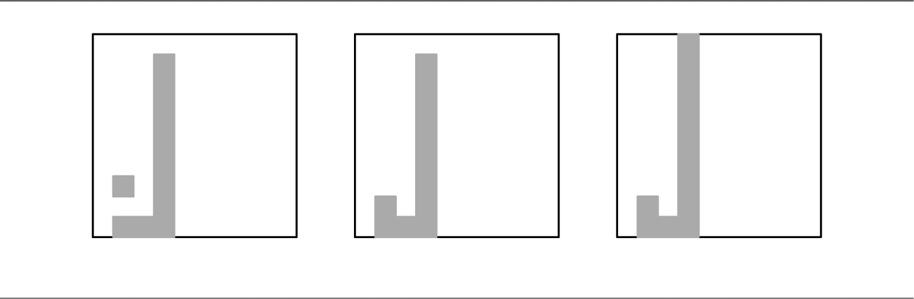
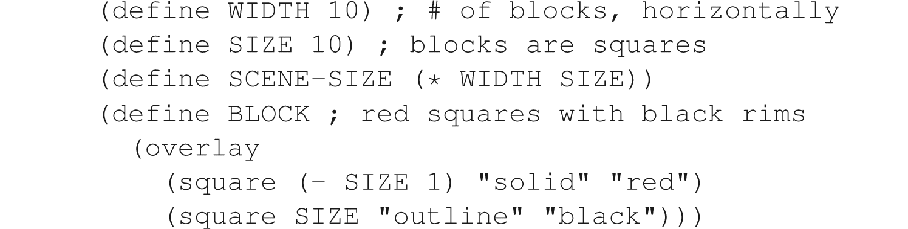

12.6 Simple Tetris
Tetris is another game from the early days of software. Since the design of a full-fledged Tetris game demands a lot of labor with only marginal profit, this section focuses on a simplified version. If you feel ambitious, look up how Tetris really works and design a full-fledged version.
In our simplified version, the game starts with individual blocks dropping from the top of the scene. Once one of them lands on the ground, it comes to a rest and another block starts dropping down from some random place. A player can control the dropping block with the “left” and “right” arrow keys. Once a block lands on the floor of the canvas or on top of some already resting block, it comes to rest and becomes immovable. In a short time, the blocks stack up; if a stack of blocks reaches the ceiling of the canvas, the game is over. Naturally the objective of this game is to land as many blocks as possible. See figure 81 for an illustration of the idea.

Figure 81: Simple Tetris
Given this description, we can turn to the design guidelines for interactive programs from chapter 3.6. They call for separating constant properties from variable ones. The former can be written down as “physical” and graphical constants; the latter suggest the data that makes up all possible states of the simple Tetris game. So here are some examples:
• The width and the height of the game are fixed as are the blocks. In terms of BSL+, you want definitions like these:

Explain these definitions before you read on.
• The “landscapes” of blocks differ from game to game and from clock tick to clock tick. Let’s make this more precise. The appearance of the blocks remains the same; their positions differ.
We are now left with the central problem of designing a data representation for the dropping blocks and the landscapes of blocks on the ground. When it comes to the dropping block, there are again two possibilities: one is to choose a “physical” representation, another would be a “logical” one. The physical representation keeps track of the actual physical position of the blocks on the canvas; the logical one counts how many block widths a block is from the left and the top. When it comes to the resting blocks, there are even more choices than for individual blocks: a list of physical positions, a list of logical positions, a list of stack heights, and so forth.
See exercise 215 for a related design decision.
In this section we choose the data representation for you:
(define-struct tetris [block landscape])
(define-struct block [x y])
; A Tetris is a structure:
; (make-tetris Block Landscape)
; A Landscape is one of:
; -- '()
; -- (cons Block Landscape)
; A Block is a structure:
; (make-block N N)
; interpretations
; (make-block x y) depicts a block whose left
; corner is (* x SIZE) pixels from the left and
; (* y SIZE) pixels from the top;
; (make-tetris b0 (list b1 b2 …)) means b0 is the
; dropping block, while b1, b2, and … are resting
This is what we dubbed the logical representation, because the coordinates do not reflect the physical location of the blocks, just the number of block sizes they are from the origin. Our choice implies that x is always between 0 and WIDTH (exclusive) and that y is between 0 and HEIGHT (exclusive), but we ignore this knowledge.
Exercise 220. When you are presented with a complex data definition—like the one for the state of a Tetris game—you start by creating instances of the various data collections. Here are some suggestive names for examples you can later use for functional examples:
(define landscape0 …)
(define block-dropping …)
(define tetris0 …)
(define tetris0-drop …)
…
(define block-landed (make-block 0 (- HEIGHT 1)))
…
(define block-on-block (make-block 0 (- HEIGHT 2)))
Design the program tetris-render, which turns a given instance of Tetris into an Image. Use DrRacket’s interactions area to develop the expression that renders some of your (extremely) simple data examples. Then formulate the functional examples as unit tests and the function itself. 
Exercise 221. Design the interactive program tetris-main, which displays blocks dropping in a straight line from the top of the canvas and landing on the floor or on blocks that are already resting. The input to tetris-main should determine the rate at which the clock ticks. See the documentation of on-tick for how to specify the rate.
To discover whether a block landed, we suggest you drop it and check whether it is on the floor or it overlaps with one of the blocks on the list of resting blocks. Hint Read up on the member? primitive.
When a block lands, your program should immediately create another block that descends on the column to the right of the current one. If the current block is already in the right-most column, the next block should use the left-most one. Alternatively, define the function block-generate, which randomly selects a column different from the current one; see exercise 219 for inspiration.
Exercise 222. Modify the program from exercise 221 so that a player can control the horizontal movement of the dropping block. Each time the player presses the "left" arrow key, the dropping block should shift one column to the left unless it is in column 0 or there is already a stack of resting blocks to its left. Similarly, each time the player presses "right", the dropping block should move one column to the right if possible.
Exercise 223. Equip the program from exercise 222 with a stop-when clause. The game ends when one of the columns contains enough blocks to “touch” the top of the canvas.
Once you have solved exercise 223, you have a bare-bones Tetris game. You may wish to polish it a bit before you show it to your friends. For example, the final canvas could display a text that says how many blocks the player was able to stack up. Or every canvas could contain such a text. The choice is yours.